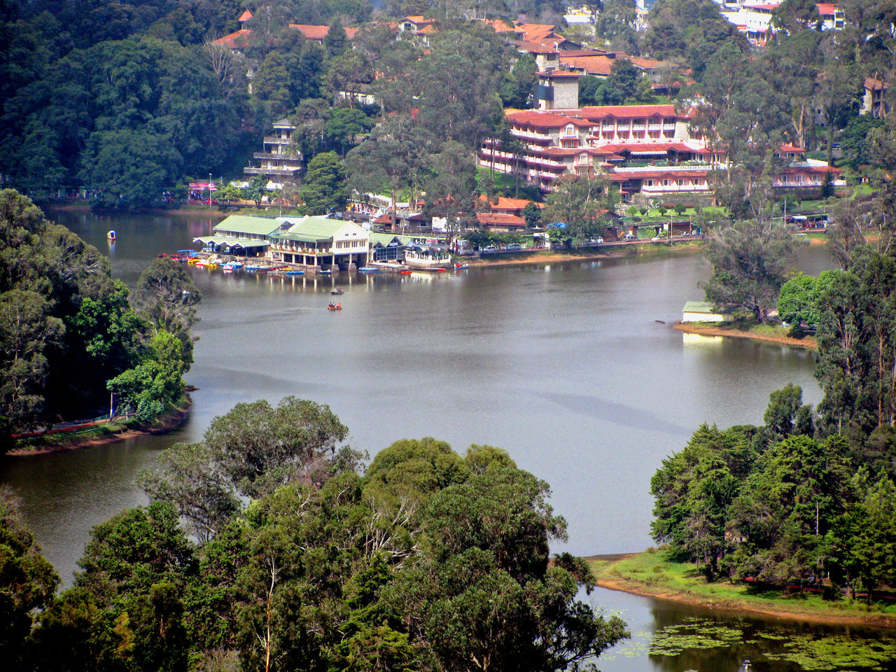
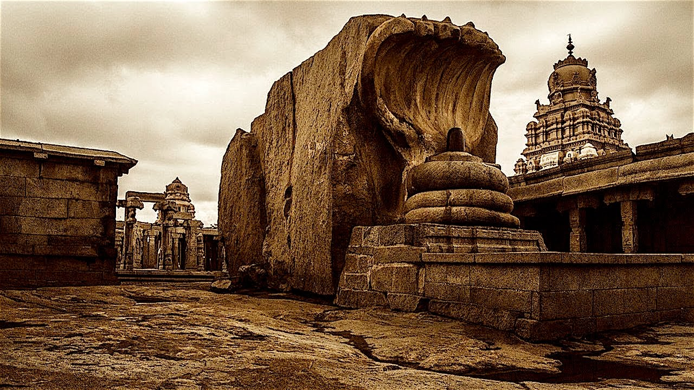

SCENIC BEAUTY OF KODAIKANAL↑
Mountains
Hills

Lake
Trees
SCENIC BEAUTY OF KERALA↑
Hanging Bridge in Kerala
Forest in Kerala

Roads in Kerala
Rail Tracks in Kerala
TEMPLES IN TAMIL NADU↑

Mahabalipuram Temple
Meenakshi Amman Temple
Temple Gopuram

Brihadeeswarar Temple